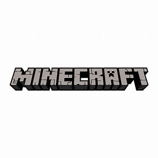
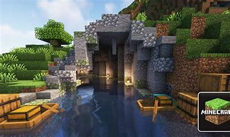
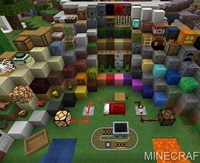
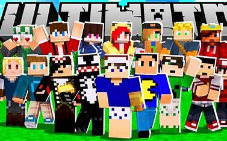

Bem-vindo ao Minecraft!
Minecraft é um jogo de sandbox que permite que você construa e explore um mundo de blocos.
Sobre o Minecraft
Minecraft foi criado por Markus "Notch" Persson e lançado em 2009.
O jogo foi adquirido pela Microsoft em 2014 e desde então tem sido atualizado regularmente.
Jogabilidade
No Minecraft, você pode construir estruturas, explorar cavernas e lutar contra monstros.
O jogo tem um modo criativo, onde você pode construir sem limites, e um modo sobrevivência, onde você precisa coletar recursos e lutar para sobreviver.
Recursos
O Minecraft tem uma variedade de recursos, incluindo madeira, pedra, carvão e diamantes.
Você pode usar esses recursos para construir ferramentas, armas e estruturas.
Comunidade
A comunidade do Minecraft é muito ativa e criativa.
Você pode encontrar muitos mods, mapas e recursos criados pela comunidade.
